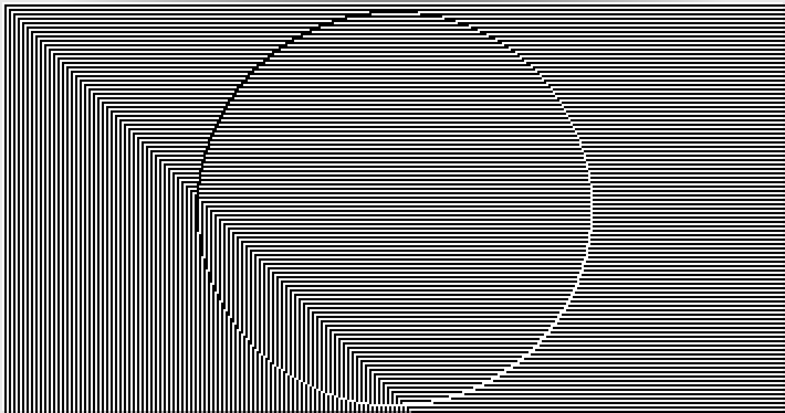
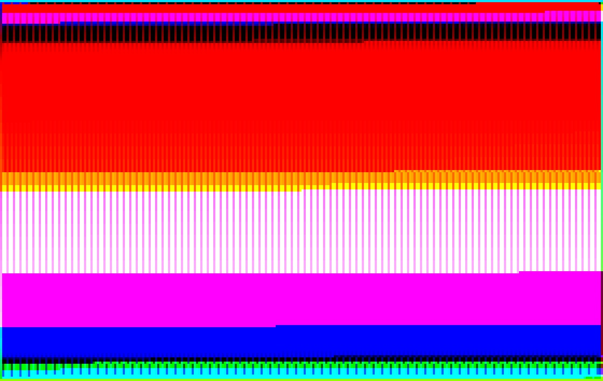

GENEALOGY OF THE DITHER IS NAKED!
If you don't want to read the whole text just click the following links to see the different stages of the project.
My first experience with dither was during my my first year of my Masters. During the first year I needed to print a gradient, but our printer was not good enough. The prints were full of artifacts due to the large amount of colors in a gradient. I decided therefore to use the Photoshop built-in tool for colour palette reduction. The tool provided various options to choose between different dither algorithms. This was the result I had while playing with the tool.
EYE BLEEDING!
But it was olnly one year later that I mastered the
Floyd–Steinberg
dithering algorithm. This was possible also thanks to
Daniele Piccone,
Daniel Temkin and their amazing
work.
Last and but not least this text about
"digital halftoning, or
dithering" was quite helpful to understand the mechanics of
dithering.
Floyd–Steinberg
dithering works by using an error diffusion algortihm
It spreads the error according to some hard-coded values as follows:
| [ ] | [ ] | [ ] |
|---|---|---|
| [ ] | [*] | [7/16] |
| [3/16] | [5/16] | [1/16] |
The pixel with the * indicates the pixel being currently scanned by the
algorithm.
Those values became my playground for the exploration of the
dithering algorithm. My first step was to change the common
divisor (16) of the those hard-coded values.
This lead to the creation of a Tumblr-Bot, posting dithered gradients with random values as dividend in the error quantization algorithm.

The next step was to create a Twitter-Bot, reacting to the #prettyDither hashtag, followed by two colors, i.e. #prettyDither red green
In order to gain a better control over the algorithm I decided to control also the the divisor of the error quantization algortihm
| divisor
––––––– dividend |
divisor
––––––– dividend |
divisor
––––––– dividend |
|---|---|---|
| divisor
––––––– dividend |
divisor
––––––– dividend |
divisor
––––––– dividend |
| divisor
––––––– dividend |
divisor
––––––– dividend |
divisor
––––––– dividend |
I implemented this to control the the calculation of the quantization error among all the neighboring pixels, not only the 4 in use in the Floyd–Steinberg algorithm. this lead to the development of this website, that allows user to control each part of the algorithm.


The interesting thing about the dithering algorithm, is its camouflaging attitude. What do I mean? Good dithering algorithms, when properly developed, should remain unnoticed by the viewers eyes. Curiously enough when the same algorithm is applied to gradients its camouflaging qualities get weaker revealing the algorithm structure in the form of colorful patterns. The additional control on the quantization error algortihm allows for more in depth analysis of the dithering process.